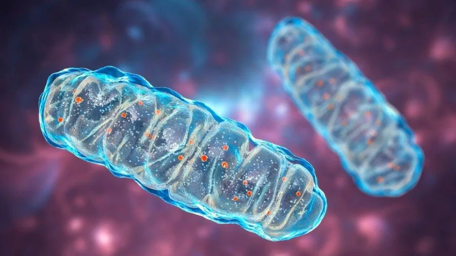

改善粒線體功能的8個方法

本文重點整理Steven Gundry醫師在他的書Unlocking the Keto Code中提到關於改善粒線體功能的八個方法
一、間歇性斷食
我們由恆河猴研究或是義大利自行車手的飲食實驗就可以知道，較長的不進食窗口(斷食窗口)，可以讓我們的肝臟製造更多的酮體，傳遞訊號給我們的粒線體，進行修復和複製的動作，也就是粒線體解偶。我們的身體也因此變得更健康，代謝更靈活。體內的血糖差不多在12小時之後會用罄，但是如果你空腹時間都不曾超過12小時，很可能你已經很久沒有利用過脂肪了。如果你的胰島素水平是正常的(大部分的人不是)，那你可以利用間歇性斷食在酮態以及糖態中自由的進出。什麼時候吃東西，的確是比你吃什麼東西更重要。
二、多酚
多酚，這種在許多植物中普遍存在的成分，尤其豐富於那些色澤深沉或具有特殊顏色的蔬菜之中。實際上，我們攝取的多酚中僅有約10%能被人體吸收。然而，未被吸收的多酚亦有其益處，它們會被腸道菌群利用作為益生元，經代謝後產生後生元，這也是觸發粒線體解偶作用的信號之一。推薦兩個富含多酚的食物，橄欖油和咖啡。攝取越多的多酚，對健康的貢獻就越大。
三、纖維
纖維素對我們的健康至關重要，其重要性不僅僅來自於植物中的維生素和礦物質，纖維素也是關鍵的一環。雖然人體無法消化纖維素，但它是腸道菌群非常偏愛的食物，亦即所謂的益生元。腸道菌群在消化益生元後會產生一些對我們有益的化合物，稱為短鏈脂肪酸，如丙酸、乙酸和丁酸，以及一些氣體分子，包括氫氣、硫化氫和一氧化氮。纖維素攝取不足與當今許多疾病有關。我們的腸道菌群更偏好的是水溶性纖維，這類纖維來自於蔬菜，如甜菊、菊苣、萵苣、奇亞籽和秋葵、亞麻仁籽、洋車前子、酪梨、青花苗、黑豆、球莖甘藍、蕃薯、無花果等。這些纖維產生的短鏈脂肪酸不僅是重要的神經傳遞物質，也是促進腺體分裂的關鍵訊號。
四、發酵食品
發酵食品為我們的健康帶來的益處，可能。發酵食品，如醋、優格、酸菜、起司、酒以及味噌，確實富含益生菌。然而，在食品加工或烹飪的過程中，這些益生菌大多會遭到破壞。即便有些益生菌能夠存活這些過程，它們也可能難以抵抗胃酸的侵蝕而到達腸道。那麼，發酵食品的真正價值在哪裡呢？為什麼它們仍然被認為對我們的健康有益？ 我們吃益生菌不只是吃到益生菌本身也吃著伴隨發燒而產生的一些物質像是， 乙酸、丙酸、 丁酸、中練脂肪酸， 這些物質都有助於刺激力腺體分裂。 根據史丹佛大學的研究，發酵食物能夠改善我們的腸道菌蟲， 並且改善發炎的反應，效果甚至比直接吃高纖維的食物更好。
五、多胺食物
多胺，如腐胺（putrescine）、精胺（spermidine），是一類在自然界廣泛分布的有機化合物，包括在多種食物中。它們對人體健康具有重要意義，尤其是在細胞增長、基因表達調控以及作為細胞內信號分子方面，像是粒線體解偶。多胺存在於哪些食物中？奶酪和發酵食品、臘肉、納豆、味噌、堅果、番茄、發酵魚類、香菇。也有研究指出，多安對於心臟和記憶力具有保護的效果。法國悖論，除了紅酒涵的白藜蘆醇、槲皮素、多酚、褪黑激素，和大量的橄欖油以外，作者認為法國飲食中的多胺含量高，也是他們心血管疾病低的原因之一
六、冷
大眾普遍認為著涼會讓身體生病，溫度降低怎麼可能和健康有關係呢？事實是，冷這個訊號，對粒線體來說也是一種解偶訊號Wim Hof, 也被稱為 “冰人”, 主張冷溫度暴露可以顯著改善健康，基於幾個關鍵理由：增強免疫系統、提高血液循環、增加褐色脂肪組織、提高耐力和恢復能力、提升心理健康感。如果你真的沒有辦法泡到冰桶或是洗個冷水澡，那麼你可以試試看作者提到的Scottish shower：開始於熱水：首先使用熱水沐浴，持續數分鐘。熱水有助於放鬆肌肉，打開毛孔，促進血液循環。轉至冷水：接著迅速轉換到冷水，持續數秒到一分鐘。冷水會刺激身體，導致血管收縮。這個方式會讓你在早上的時候保持好精神喔 。切記！有心血管疾病或是其他健康問題的人，就不建議嘗試冰水洗澡或是冰浴了
七、熱
就像冷刺激一樣，溫度太高也是會刺激粒線體解偶的。我們是恆溫動物，粒線體隨時都在體內產生熱量。粒線體需要的溫度其實比人體本身要高一些，大約是在攝氏36.1-37.2度。甚至有人認為粒線體在50度的時候運作最佳。研究藉由刺激大腦中特定部位的粒線體解偶，會引起局部溫度的上升，達到改善大腦功能的效果
八、紅光療法
紅光療法（Red Light Therapy，RLT），也被稱為低能級雷射療法（Low-Level Laser Therapy，LLLT）或光生物調節（Photobiomodulation，PBM），是一種使用低功率紅光或近紅外線光照射身體某部位的療法，旨在刺激、治療或保護受損組織，不產生明顯熱效應或損傷。紅光療法的波長範圍大約在630-700納米（紅光）到近紅外線的800-1000納米之間，這些特定的光波長被認為對細胞有生物活性作用。紅光療法的原理基於光能被細胞中的特定分子吸收，尤其是位於細胞內的線粒體。紅光療法被認為可以促進損傷組織的修復過程，減少炎症，並增強免疫系統的功能。這個技術已經是被FDA認證，對於傷口愈合、肌肉骨骼疼痛、皮膚、脫髮恢復、痤瘡、促進膠原蛋白生成是有效果的
 空腹小雞跟思思醫師一起斷食，順便養一隻小雞來養小雞 →
空腹小雞跟思思醫師一起斷食，順便養一隻小雞來養小雞 →
好朋友週信
一週一封：《健康駭客週報》這集的研究重點，加上家醫專欄這週的新文章。免費，隨時可以退訂。
延伸閱讀

提升BDNF得實用技巧
腦源性神經營養因子(BDNF)掌管神經元生長與神經可塑性，可透過運動、充足睡眠、學習與抗發炎飲食提升。

光生物調節 Photobiomodulation
紅光與遠紅外光能刺激粒線體產生能量，改善睡眠、減輕疼痛與憂鬱，每週3至5次、每次10至20分鐘較為適宜。

AMPK
AMPK是細胞能量低時啟動的代謝控制激酶，參與脂肪、糖質與蛋白質代謝及自噬，運動、減少熱量與多酚可活化它，進食與胰島素阻抗則會抑制。